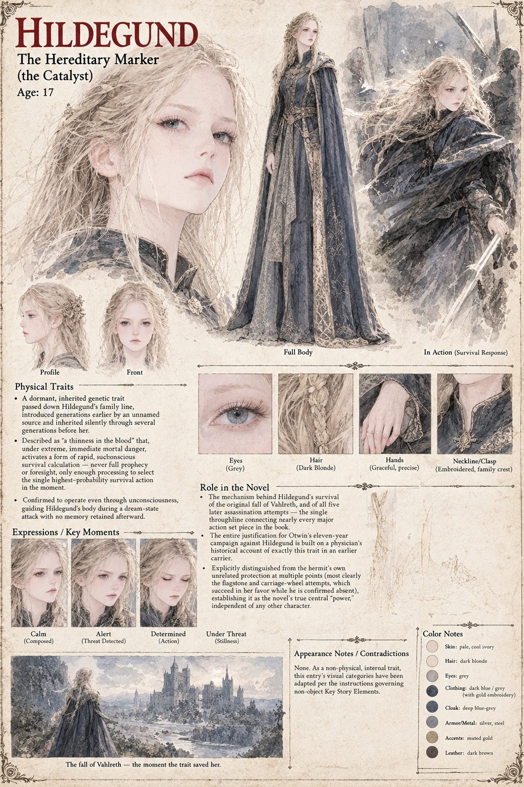

The Hereditary Marker
The Catalyst, Mythic Class · a thinness in the blood · five confirmed activations · the sheet shows its carrier at seventeen
A dormant condition in Hildegund's line, called by the physician whose sealed account Otwin inherited “a thinness in the blood”: passed down a family in no order the physician could establish, sometimes skipping a generation entirely, and making its sufferer, in moments of great fright, act as though possessed of a foreknowledge she could not possibly hold. In Hildegund it has lain asleep for seventeen years, inherited from a grandfather who died without ever suspecting what slept in him, and wakes in a burning corridor, not because seventeen means anything to it but because that is how long it takes her life to hand it a crisis extreme enough to answer. The Auditor's first working note records it as activating on schedule, “three generations delayed, but within acceptable dormancy variance”.
What it does is not a vision. The manuscript is strict about this: she does not see the future, and never will, but feels, in that instant and in every instant afterwards that the sickness chooses to answer, the single number left once every other number has been struck through. It takes a great fear to wake it, it cannot be summoned by wanting, and it never warns her of anything she has not first been given cause to dread. It will not seize a problem she has already answered, as at the ford, where trusting the man ahead has a survival rate of a hundred percent. It needs her dread of stairs to cross the flagstone. It gives her nothing on the eastern road, where fear needs a moment to gather and the wheel allows none. And it does not need her to be listening: on the night of the Hush it reaches her through a dream, as in the three days of fever when she relived four deaths she did not die, and moves her six inches to the left.
The account that describes it is Otwin's whole justification: the one other case the physician knew, a lordling whose survival of an assassin's blade bred a decade of rule on the conviction that whatever protected him always would, at the cost of two ruinous wars and a famine. Otwin concludes that the blood protects the body more reliably than it protects the judgment, and that a reckless sovereign is a patient catastrophe. The manuscript's answer, delivered at its end, is that the condition did not make Hildegund careless. She asks what a thing will cost and then asks again, and she ends by training an ordinary mind to do slowly and on purpose something the blood once did in half a heartbeat. The Auditor's closing log counts five confirmed activations and files the case as successful by every metric the Auditor is authorised to apply.
It has no body of its own. The sheet shows its carrier, Hildegund at seventeen, in her fugitive dress and in a long court gown, with panels for its triggers and the fall of Vahlreth drawn as the moment it woke. The manuscript's Archival Log gives its class as Mythic.